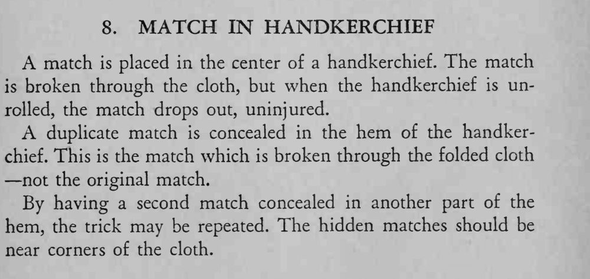

一根火柴放在手帕中央，隔着布把它折断，再打开手帕，火柴却完好地掉了出来。
藏火柴的位置要靠近手帕角，折起后正好落在捏断的地方。

A match is placed in the center of a handkerchief. The match is broken through the cloth, but when the handkerchief is unrolled, the match drops out, uninjured. A duplicate match is concealed in the hem of the handkerchief. This is the match which is broken through the folded cloth not the original match. By having a second match concealed in another part of the hem, the trick may be repeated. The hidden matches should be near corners of the cloth.